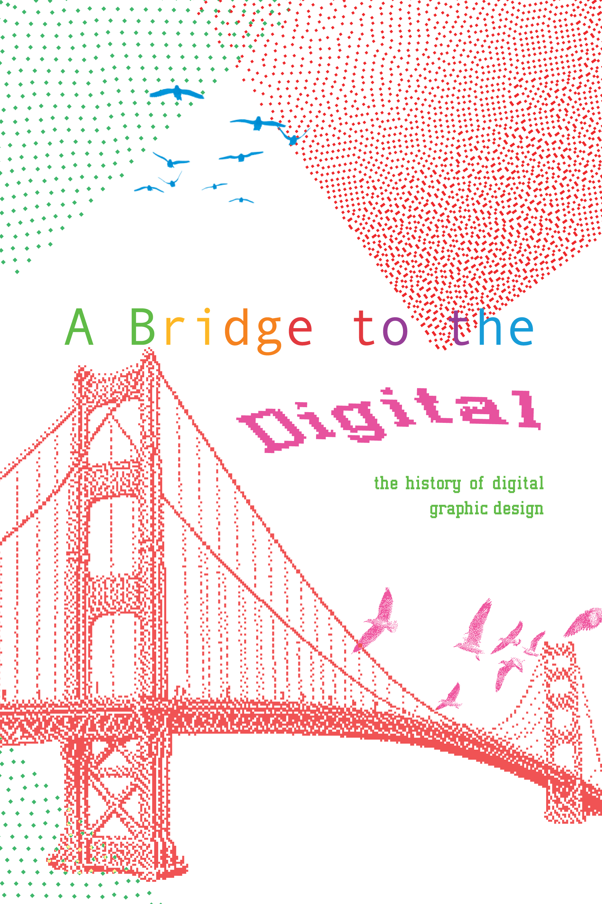
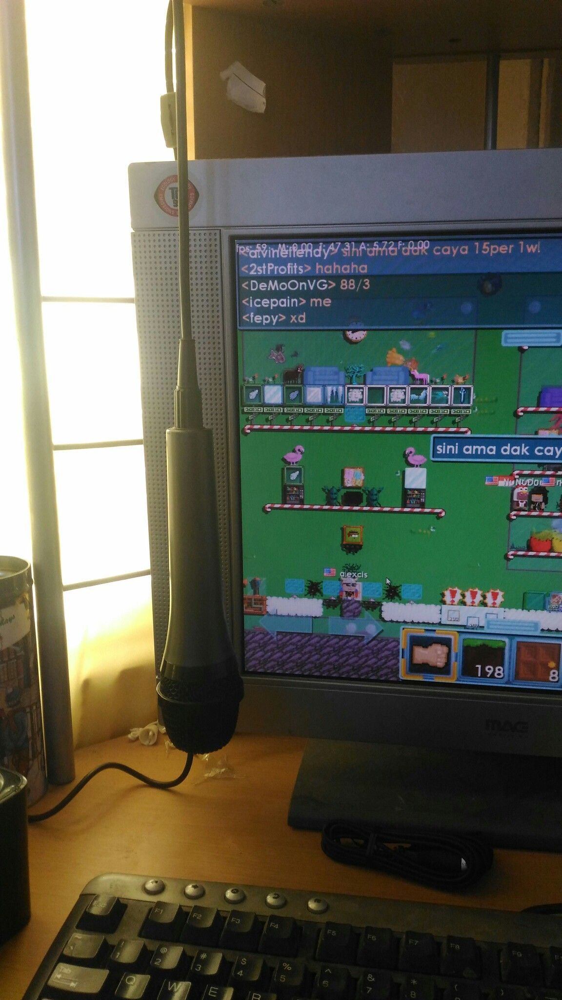

Electrical Engineering + VCD · Notre Dame → Michigan
Nguyen Nguyen
I'm an electrical engineering student at the University of Notre Dame with a concentration in nanotechnology. I am a computer architecture researcher here at Notre Dame and I'm currently researching the implementation of an adiabatic microprocessor. My main contributions have been in adiabatic verification methodology. Beyond adiabatic circuits, I have great interests in digital accelerators.
I'm fortunate enough to say I'll be attending the University of Michigan ECE Ph.D program this fall. At UMich, I plan to continue research in large scale adiabatic CMOS circuits. Right now at Michigan, I'm working on fast and accurate power feedback through the hardware design flow. We'll see where this goes in 5-6 years. Wish me luck!
Outside the lab, I'm involved in visual-communication design. I run design for Strike Magazine, help out with the Chinese Cultural Society and Dillon Hall merch, and created a fast-fashion clothing waste awareness campaign.
present
- UVM verification flow for ultra-low-power adiabatic MIPS processors, with clock-phase-aware BFMs.
- Constrained-random and self-checking environment achieving >95% functional coverage on adiabatic ALU.
- Automated regression infrastructure with LLM-assisted coverpoint generation and Python post-processing.
Apr 2025
- Implemented Bennett clocking and split-rail charge recovery into a 16-bit multicycle MIPS design.
- Designed standard cell library for adiabatic 16-bit MIPS processor in SkyWater 90nm.
- Scripted LVS batch runs and physical verification fixes with Shell and SKILL.
Aug 2024
- FPGA test harness for post-silicon validation of adiabatic microprocessors.
- Custom microprocessor-to-PC datapath: on-chip BRAM buffer, UART protocol, PC-side parsing.
present
- Mentored 8+ undergrads across multiple cohorts in digital IC design and verification.
4×4 systolic-array-based GeMM accelerator with Bfloat16 PEs and weight-stationary architecture. Custom adiabatic scratchpad buffer reduces active power by several orders of magnitude over conventional designs.
Designed and verified in SystemC with baud rate control and error detection — completed in 2.5 weeks. Physical design in Cadence Stratus/Genus/Innovus, exceeded all PPA targets. Taped out in TSMC 180nm.
Fan speed controller in Verilog with temperature sensor interface and multi-speed control logic. Synthesized using the eFabless chipIgnite flow in GF180nm. Passed Multi-Project Wafer and Tapeout tests.
GRU-based text generator in TensorFlow with ~6M parameters, trained on 10,000+ graded pick-up lines. Optimized over 225 epochs with batch norm, dropout, and L2 regularization (test loss 1.7). Paired with a classifier that scores outputs.
Visual communication design work. Still filling this in.

VCD Book Cover Project
My Old Setup